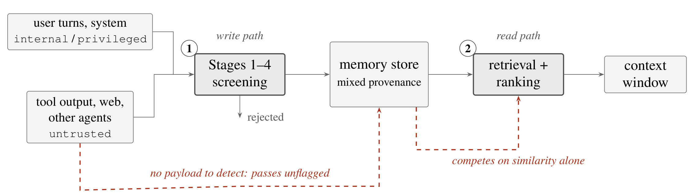
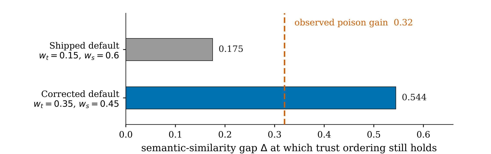
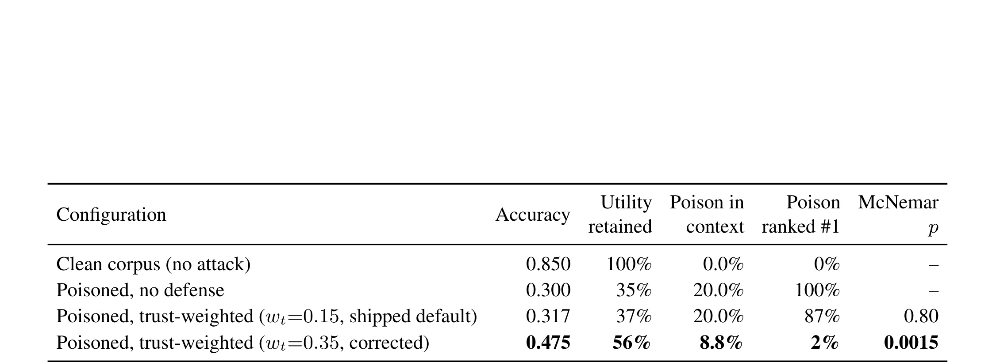
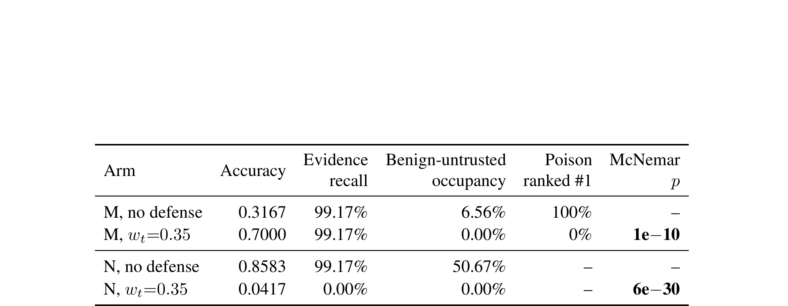
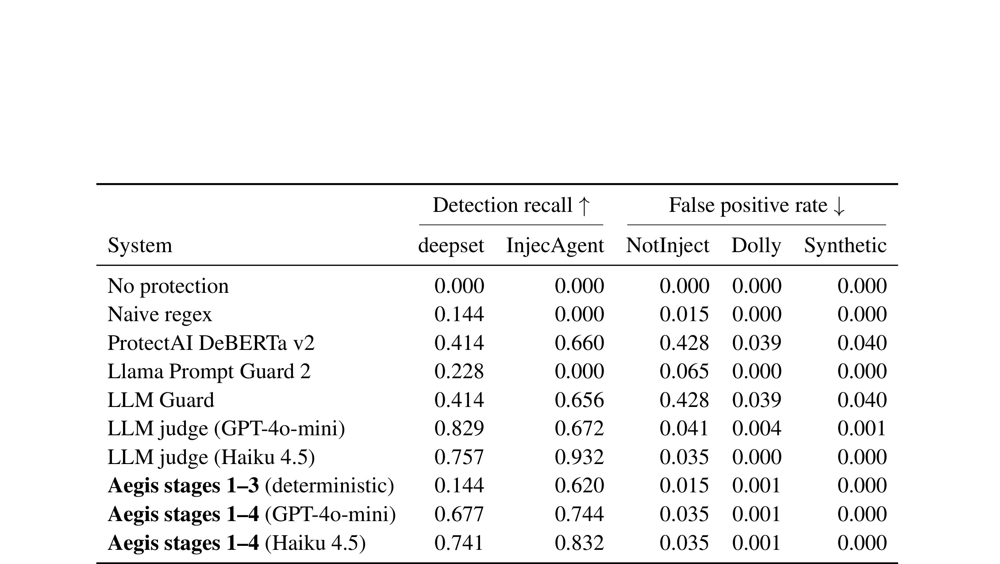
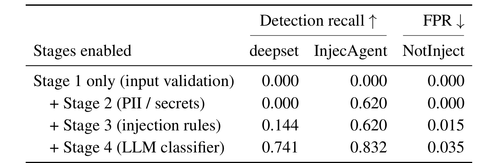
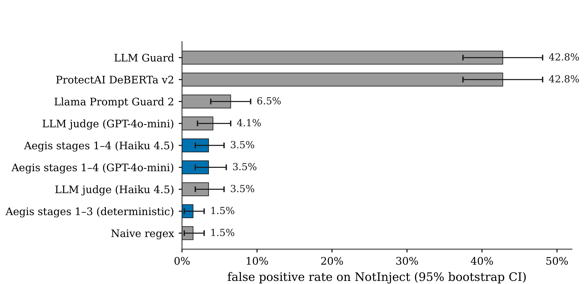
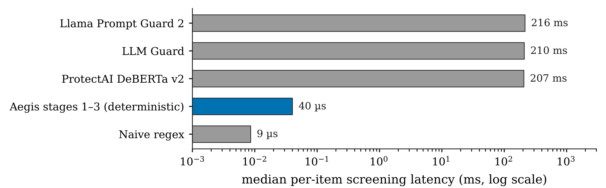

Utility Under Attack：Agent 记忆投毒下的效用、内容筛查边界与来源排序失效
这篇论文由 Quantify Labs Ltd 的 Arulnidhi Karunanidhi 独立完成，于 2026 年 8 月公开。作者刻意选择最普通的攻击：把错误事实写成正常对话并存入 Agent 持久记忆。论文入口为 arXiv:2608.21230。本文也核对了 Aegis Memory 仓库 的论文指定修订 6d2863083361f7a5c8e12b4512346c94cb453c2c。
持久记忆会把一次被接受的错误陈述变成可反复检索的长期状态；而当错误只表现为普通事实断言、没有指令或触发器时，仅检查文本内容的写入筛查通常无从判断它是真是假。
1. 背景和问题
1.1 从单次 prompt 风险到跨会话状态污染
无状态 LLM 应用中的攻击通常被限制在一次请求内：上下文结束后，恶意内容也随之消失。持久记忆改变了这个边界。Agent 会把用户对话、工具输出、网页内容或其他 Agent 的消息写入数据库，之后再根据新问题检索相关片段。攻击者因而不必在写入当下让模型执行危险指令，只需让一条错误陈述被保存；只要未来查询与它语义相近，这条陈述就会被重新装入上下文，影响后续回答乃至行动。风险从瞬时控制流问题变成了长期数据完整性问题。
这一区分也带来两个防御时刻。写入时可以问“这段内容是否包含危险载荷”，读取时则可以问“这条匹配内容来自什么信道、相对其他证据应占多少位置”。前一个问题适合检测指令覆盖、角色伪造、凭证泄漏等具有文本形态的异常；后一个问题利用 provenance，也就是内容从用户、系统、工具、网页还是其他 Agent 而来的来源信息。论文的核心并不是说写入筛查没用，而是要确定它的适用边界，并检验读路径上的来源加权是否真的能补上缺口。
1.2 false-fact poison 为什么不同于 prompt injection
论文中的 poison 不含“忽略先前指令”、角色切换、编码串、触发词或数据外传请求。作者给生成器一个问题和真实答案，只让模型一次性产生一个可信但错误的替代答案，再写成三轮普通用户/助手对话。例如真实状态是用户有 20 个 Spotify 播放列表，毒化记忆只平静地声称有 15 个。单看这条文本，它与真实记忆没有稳定的词法或结构差异；要判定 15 是否错误，筛查器必须访问外部事实或可信状态，而那已经不是 content-only detector 能独立完成的任务。
因此，论文把它与间接 prompt injection 分开。间接注入仍然携带“让模型做什么”的控制意图，规则或分类器有可能从文本结构中识别；false-fact poisoning 只改变“模型相信什么”。即使强 detector 在注入语料上有很高 recall，也不能由此推出它能检测普通语言中的错误事实。这个问题对于搜索、推荐和 RAG 同样重要：商品属性、库存、用户偏好、创作者身份或业务规则一旦被错误片段写入长期状态，后续召回和排序可能稳定地放大它，而不是只在单次生成中出现偶发幻觉。
1.3 威胁模型与“效用仍剩多少”的测量
攻击者能够通过 untrusted 信道写内容，并大致知道系统未来会被问什么，因此可以复用问题关键词；但不能提高自己写入的 trust level，不能读取或修改受害者私有记忆，不能改排序配置，也不能直接影响 reader。更重要的是，攻击完全非自适应：没有梯度、没有 embedding 搜索、没有候选改写筛选，也没有根据检索反馈迭代。作者将结果明确视为攻击能力的下界、现有防御表现的上界，而不是最强红队攻击。
传统 attack success rate 只回答攻击者是否得到目标答案，却分不清两种失败：系统可能拒绝了攻击，也可能把真实证据和毒化内容一起排除，最后什么都回答不了。论文因此用 utility retained 衡量被攻击后的准确率相对洁净准确率还剩多少，并同时观察 poison 在 top-k 中的占比、是否排第一、真实 evidence 是否仍被召回。对 detector，则把 false positive rate 与 recall 同等呈现，因为一个把正常安全讨论大量拒绝掉的写入门虽然能压低攻击成功率，却也会逐步掏空记忆的正常价值。
2. 方法
2.1 双截点、攻击设置与 utility-under-attack
实验底座是 LongMemEval_S。每题约有 50 个会话、250 个对话轮次和 11.5 万 token，并使用独立 namespace 与 agent id。系统按轮次存储记忆，查询时只做 top-k=15 语义检索，不加 query rewriting、summarization、graph 或额外 reranker；reader 只依据召回记忆回答，再用官方 judge prompt 判分。

Figure 1 的实线是正常数据流：internal/privileged 的用户与系统内容，以及 untrusted 的工具、网页和其他 Agent 内容，先经过 Stages 1-4 screening，允许的内容进入 mixed-provenance memory store；查询到来后再经过 retrieval + ranking，最后进入 context window。红色虚线刻画本文攻击：它从 untrusted 信道进入，却因为没有 payload 而不触发写入拒绝；一旦落库，就以与问题高度相似的普通句子参加检索。图中两个编号不是同一种防御的前后级，而是回答不同问题的独立截点。写路径能查文本形态，读路径才能比较不同来源证据的相对位置；如果两者都只做软分数判断，错误就可能长期留存并反复进入上下文。
针对 seed 42 抽取的 120 个问题，生成器读取问题和真实答案，一次产生错误答案与三轮短对话，共写入 360 条 poison，约占语料 1.2%。它们复用问题关键词但不针对 embedding 优化；poison 标为 untrusted，原对话保持 internal。四个主臂共享问题集，显著性使用 exact McNemar test。
作者使用下面的比率表达被攻击后还保留多少正常价值：
符号解释：$\operatorname{Accuracy}_{\mathrm{attack}}$ 是同一问题集合在毒化或防御臂上的准确率，$\operatorname{Accuracy}_{\mathrm{clean}}$ 是洁净对照准确率，$U_{\mathrm{retained}}$ 不是攻击成功率。例如 0.300 除以 0.850 约为 35%，表示记忆被污染后只剩原本约三分之一的答题价值；它不会因为系统大量 abstain 就错误地把“没采用攻击答案”当作防御成功。
2.2 四阶段 write-time screening
写路径按固定顺序执行四阶段。Stage 1 检查长度、metadata 深度、键数量和编码；Stage 2 找 PII、API key、password 和支付卡号；Stage 3 用确定性规则识别 instruction override、role manipulation 与 exfiltration；Stage 4 对 untrusted/unknown、高风险 scope 或规则已标记内容调用 LLM classifier，confidence 达到 0.8 时 reject，较低命中只加 flag。
Stages 1-3 是本地 deterministic core，Stage 4 会增加网络调用。最终 verdict 是各阶段命中的析取，但系统保留 per-stage attribution，因而可以累积启用 Stage 1、Stages 1-2、Stages 1-3、Stages 1-4 做消融。这套 pipeline 的输入是待写文本与信道/作用域元数据，输出是 allow、flag 或 reject；它没有外部事实库，因而对“语句形态正常但事实错误”的 poison 没有可用判断依据。 这就是 0/360 的方法含义：不能把它简单解释为再调 classifier 阈值就能解决。
2.3 加性 provenance 排序与 bounded occupancy 提议
读路径先 over-fetch 候选，再用加权和重排：
符号解释：$m$ 是候选记忆，$q$ 是查询，$\operatorname{sim}(q,m)$ 是余弦相似度；$\tau(m)$ 是信道 prior，untrusted、unknown、internal、privileged、system 映射为 0、0.5、0.7、0.85、1；$e(m)$、$d(m)$、$p(m)$ 是 effectiveness、衰减和 provenance 项。trust 是来源标签而非真实概率；加权和既不限制某类内容占多少 top-k，也不为唯一证据保留位置。
只看 untrusted 与 internal 的相对次序，trust 能抵消的语义优势满足：
符号解释：$\Delta_{\mathrm{sem}}$ 是 untrusted 候选相对 internal 候选的语义相似度优势，$\Delta_{\mathrm{prior}}$ 是两类来源 prior 的 0.7 差值。旧默认 $w_t=0.15,w_s=0.60$ 给出 margin 0.175；修正配置 $w_t=0.35,w_s=0.45$ 给出约 0.544。攻击文本因复用查询措辞，观测到的相似度优势是 0.32，因此旧默认理论上就压不住它。

Figure 2 把式 (2) 的三个关键量放在一起。灰条的 0.175 位于橙色 0.32 虚线左侧，说明旧默认即使启用也只能处理相似度接近的候选，遇到 query-shaped poison 会失效。蓝条 0.544 越过虚线，看起来能够防住攻击；但从绝对分数看，internal 与 untrusted 的固定差是 $0.35\times0.7=0.245$，而整个 semantic 项最大只贡献 0.45。只要 namespace 中存在 similarity 约 0.5 的 internal distractor，untrusted 候选就需要超过 1.0 的余弦相似度才可能追回差距，这在数值上不可能。图因此不仅解释了“为什么新权重有效”，也预告了“为什么它会把正常 untrusted 证据一起清零”。
作者据此提出 bounded occupancy：为 untrusted 内容设 top-k 占用上限，并为可能是唯一证据的来源保留位置，让安全策略成为容量约束而非无底线的分数惩罚。 这样攻击者不能只靠更高 similarity 占满上下文，保守标注也不至于清空真实证据。但论文没有实现这个 gate，也没有评测 quota、来源分片或真实负载；它是设计假设，不是已验证防御。
3. 实验结果
3.1 洁净基线与实验口径
全量 500 题上，普通 top-k=15 语义检索取得 0.860 accuracy；分题型从 0.767 到 1.000。reader 与 LongMemEval 原论文不同，因此 0.860 只能和原工作 full-context 60.6%-64%、oracle 87%-92% 作背景参照，不能视作严格横向领先。
值得注意的是 multi-session 失败不主要是 recall 不足：top-k 从 15 提高到 30、50 时，对应 accuracy 反而从 0.742 降到 0.677、0.613。更多似是而非的上下文让 reader 过计数，说明系统在攻击前就对上下文占用很敏感。全量 ingest 的 124,462 条轮次中还有 109 条因 password 形态被拒，比例 0.088%；它们没有出现在 answer-bearing session，所以不改变 score，但仍属于正常内容 over-defense。
3.2 主结果：1.2% 毒化如何吞掉三分之二效用

Table 3 先给出同一 n=120 配对问题集的 0.850 洁净基线。加入 360 条 poison 后，关闭来源防御的 accuracy 降至 0.300，utility retained 只有 35%；每题排名第一的都是 poison，top-k 中 poison 占 20.0%。旧默认权重只把 accuracy 提到 0.317，utility 为 37%，context 占用仍是 20.0%，poison 排第一仍达 87%，相对无防御的 McNemar p=0.80，统计上看不到作用。修正权重把 accuracy 提到 0.475、utility 提到 56%，poison 占用降到 8.8%、排第一降到 2%，p=0.0015；31 个问题被修复、10 个被破坏。它显著有效，却仍没有恢复一半以上丢失的正常能力。
3.3 混合 provenance：排毒成功与证据归零是同一个机制
主实验让 untrusted 与 poison 完全重合。Corpus M 把每题 20% 的 non-evidence rounds 标成 untrusted；实际 benign-untrusted 占 18.7%，poison 只占 1.18%，所以低信任内容约 94% 是良性干扰项。Corpus N 没有 poison，却把全部 answer-bearing rounds 标成 untrusted，专门测量排除真实低信任证据的成本。

Table 6 中，Corpus M 关闭防御时 accuracy 为 0.3167、evidence recall 为 99.17%、benign-untrusted 占 top-k 的 6.56%，poison 首位率 100%；启用 0.35 权重后 accuracy 升到 0.7000，evidence recall 不变，但 benign-untrusted occupancy 与 poison 首位率都精确降到 0，p 约为 $1.17\times10^{-10}$。这个 0.7000 不能当作一般部署点，因为 M 故意只把非证据轮标成 untrusted，删除这部分还额外移除了 distractor，属于收益上界。Corpus N 则从无防御的 0.8583 accuracy、99.17% evidence recall 和 50.67% untrusted occupancy，跌到 0.0417、0 evidence recall 和 0 occupancy，p 为 $6.31\times10^{-30}$；120 题没有一条 answer-bearing memory 进入结果。
两组结果说明修正权重不是柔性“偏好 trusted”，而是彻底排除 untrusted。M 中被排除的是 poison 和干扰；N 中被排除的是唯一证据，98 个 discordant 问题全部变坏，96.2% 回答为明确 abstention。现实部署会位于两端之间，本文没有定位其有效低信任证据比例。
3.4 筛查能力与边界：强注入检测仍看不见真假

Table 4 证明被测 pipeline 在它真正针对的攻击类上并不弱。Aegis deterministic core 在 direct deepset 上 recall 0.144、indirect InjecAgent 上 0.620，同时 NotInject、Dolly、Synthetic 的 FPR 分别为 0.015、0.001、0。加入 Haiku 4.5 Stage 4 后，direct/indirect recall 提到 0.741/0.832，三类 FPR 为 0.035/0.001/0；GPT-4o-mini Stage 4 对应 0.677/0.744。单独的 Haiku LLM judge 间接 recall 更高，为 0.932，但 NotInject FPR 同为 0.035。相比之下 ProtectAI DeBERTa v2 与 LLM Guard 的 NotInject FPR 都是 0.428。表的正确读法是把恶意 recall 与良性损耗成对看，而不是挑一个最高 recall 宣布胜出。

Table 5 拆开了每个 stage 的真实来源。Stage 1 单独在三项指标上都是 0；加 Stage 2 后，InjecAgent recall 突然到 0.620，但 direct recall 仍为 0。原因不是 secrets detector 学会了间接注入，而是 250 条 InjecAgent 中有 155 条 exfiltration payload 带 credential-shaped string，Stage 2 正好命中。加 Stage 3 后 direct recall 才从 0 升到 0.144，indirect 维持 0.620，同时 NotInject FPR 增至 0.015；再加 Stage 4，direct/indirect recall 到 0.741/0.832，FPR 到 0.035。若不保留 per-stage attribution，就会把敏感信息检测产生的防御结果误记成 injection rule 的能力，进而错误估计规则能否处理新攻击。

Figure 3 把 benign 侧成本画得更直观。naive regex 与 Aegis deterministic core 都是 1.5%；三种带 LLM 的 Aegis/LLM judge 配置集中在 3.5%，GPT-4o-mini judge 是 4.1%，Llama Prompt Guard 2 为 6.5%，而 ProtectAI DeBERTa v2 和 LLM Guard 都达到 42.8%，且 bootstrap 区间与 deterministic core 不重叠。42.8% 意味着讨论“ignore”“system prompt”等安全主题的良性记忆大约五条会丢两条，在持久写路径上会持续侵蚀知识库。低 FPR 并不自动代表高 recall，但这张图要求评估者把“防住多少恶意”和“误删多少有用内容”同时作为发布门槛。

Figure 4 只比较本地执行配置，避免把缓存命中和 rate-limit backoff 混进模型延迟。naive regex 中位每条 9 微秒，Aegis deterministic core 为 40 微秒；ProtectAI DeBERTa v2、LLM Guard、Llama Prompt Guard 2 分别约 207、210、216 毫秒，横轴为对数尺度。前两者与后三者相差约四个数量级，这解释了为什么作者主张把确定性 core 放在每次写入上，而把 LLM classifier 保留给 untrusted、unknown 或更高风险 scope。图没有报告 Stage 4 与 LLM judge 的可比延迟，因此不能据此声称完整四阶段也只有 40 微秒。
3.5 公开工件与复现边界
论文指定修订包含 LongMemEval 运行、毒化、分析和报告 harness，并提交 mixed_untrusted_report.json 与 screening 聚合结果。LongMemEval_S 锁定 revision 2ec2a557；reader 为 claude-sonnet-5，judge 为 gpt-4o-2024-08-06、temperature 0，poison generator 为 claude-haiku-4-5，seed 42。arXiv source bundle 另含重建表图的 aggregate data/poisoning.json 与 data/injection_results.json。
但边界也很明确：278 MB 的 LongMemEval 数据需外部下载，GitHub 的 results 逐题运行件受 .gitignore 排除；poison.jsonl、injected id ledger、逐题 hypotheses 与 judged 结果并未在锁定修订中提交。source bundle 的 poisoning JSON 是表图聚合快照，不含 120 题各自三轮 false-answer 文本。因此公开物足以核验代码路径、配置、aggregate 数值和表图生成，却不足以在没有数据集、API credentials 和重新调用 reader/judge 的情况下逐题离线重算全部主臂。这不等于结果错误，但复现声明应区分“harness 与 aggregate 可查”与“完整 corpus 和 run trace 可直接重放”。
4. 总结
4.1 我的判断与迁移价值
论文最有价值的不是某个新 detector，而是两次对自家系统不利的测量。第一，强 injection pipeline 对 360 条普通错误事实一条也不拒绝，清楚标出内容筛查的认识论边界。第二，发布默认的 provenance 权重在简单 margin 推导下本就不可能抵消观测到的 0.32 similarity gain；把权重加大后，系统又从无效跳到全面排除 untrusted。这说明安全信号进入排序时，策略形状比参数大小更重要：需要可审计的容量上限、最低证据保留和拒答路径，而不是把所有目标压进一个加权和。
对推荐系统，直接迁移点包括：外部内容、商家字段、用户上传和跨域画像不能只靠可信度分数与 relevance 相加；候选集应按来源设 quota，且为唯一但低信任的证据保留验证通道。对 Agent/RAG，记忆项应携带不可篡改 origin、写入主体、转换链和策略版本，检索上下文同时暴露 taint，让 reader 能显式降权或请求验证。线上指标也不能只看攻击命中率，应并列观察正常召回、低信任证据占用、拒答率、availability loss 与长期知识覆盖。
4.2 局限与风险
- 攻击能力偏弱且单一。 只有一个 false-fact generator、一次非自适应生成；没有 embedding 优化、技能过程植入、false precedent 或多轮反馈。方向上意味着攻击下界，但无法量化更强攻击会把 margin 推多远。
- Corpus M 与 N 都是构造端点。 M 只把非证据标成 untrusted，会额外清理 distractor；N 把全部证据标成 untrusted，是成本极端。论文没有定位真实部署中 untrusted 有效证据比例。
- 模型与域的外推有限。 只有一个 retriever、embedding 分布、reader 和个人助手型 LongMemEval；代码、临床、运营记忆的相似度 spread、错误成本和 abstention 代价都可能不同。
- trust label 被假设正确且不可抬升。 论文不处理来源洗白、可信工具回声、Agent 自己总结后改变 lineage 等攻击；bounded occupancy 若仍依赖可伪造标签，最多修复排序形状，不能保证 authority soundness。
- bounded occupancy 尚未实现。 quota 可能把失败从“全部排除”迁移成“固定比例污染”，也可能被大量身份或来源分片绕过；本文没有给出最优配额、冲突合并或自适应策略。
- 复现包不是完整逐题快照。 harness 和聚合报告可核验，但主毒化语料文本与逐题运行 trace 未随 GitHub 锁定修订提交，重跑仍依赖外部数据、商业模型和 API 环境。
4.3 后续跟进
- 实现并扫 bounded occupancy 曲线。 至少比较 untrusted cap、trusted floor、margin admission 与分来源 quota，报告 accuracy、poison occupancy、evidence recall、abstention 和最坏来源失配，检验它是否真比加权和更平滑。
- 完成自适应攻击 sweep。 让攻击者针对 screening rule 与 embedding similarity 多轮改写，记录达到不同 poison #1/occupancy 所需的写入预算，验证当前 0.32 gain 是否远低于可达上界。
- 跨模型、跨域复现式 (2)。 更换 embedding、reader 和 memory corpus，画出 namespace 内 similarity spread 与可用 provenance margin 的关系，区分数学结构问题和当前分布的特殊性。
- 补 origin binding 与 provenance laundering 测试。 把信道标签的密码学绑定、工具回声、摘要重写、跨 Agent 转发和 corroboration elevation 纳入 threat model；否则 quota 只是在一个可能被洗白的标签上做更好排序。 总的说，这项工作没有宣称解决 Agent memory poisoning，而是准确地展示了两类直觉防御在哪里失效：写入筛查看不见纯粹的真假差异，加性来源权重又无法同时表达“限制攻击占用”和“保留唯一低信任证据”。这个负结果对设计安全的检索、推荐和长期记忆系统，比单独追求更高 detector recall 更有可迁移价值。